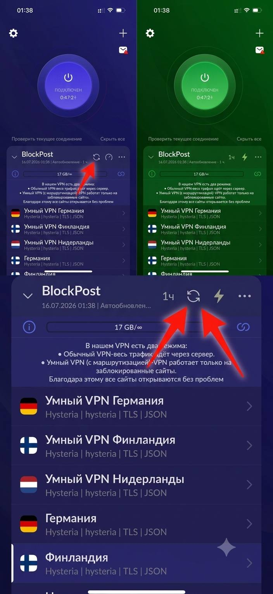
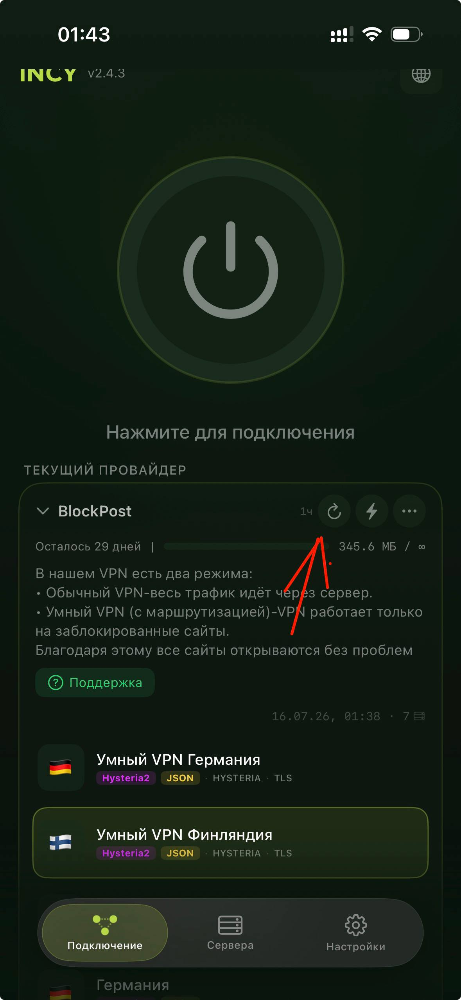
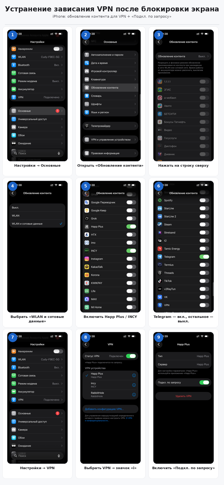
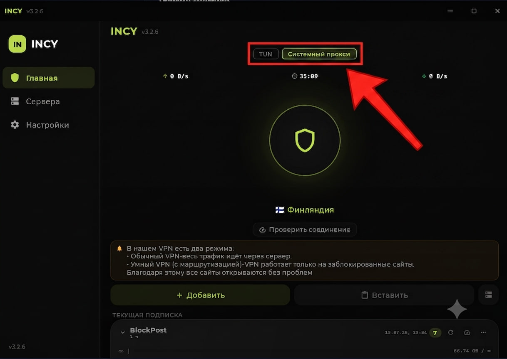

Устранение неполадок VPN
Частые проблемы с подключением и их решения: обновление подписки, зависание после блокировки экрана на iPhone и сайты не открываются на Windows.
Регулярно обновляйте подписку
Не забывайте обновлять подписку в VPN-приложении. Это убирает нерабочие сервера, добавляет новые и исправляет возможные ошибки подключения. Нажмите значок обновления (🔄) рядом с названием вашей подписки — как показано на скриншотах.


Устранение зависания VPN после блокировки экрана
Обновление контента для VPN-приложения + режим «Подключение по запросу» — два переключателя в настройках iPhone, которые решают проблему обрыва соединения после блокировки экрана.
Почему VPN «засыпает»
iOS ограничивает фоновую активность приложений, чтобы экономить заряд батареи. Если для VPN-клиента отключено «Обновление контента», система приостанавливает его работу при блокировке экрана — соединение обрывается и не восстанавливается само. Ниже — пошаговая настройка, которая устраняет это поведение.

Откройте Настройки → Основные
Перейдите в главный раздел системных настроек iPhone.
Найдите пункт «Обновление контента»
Он находится в списке разделов «Основные», между «Игровым контроллером» и «Словарём».
Откройте настройку «Обновление контента»
Нажмите на строку сверху экрана, чтобы задать глобальный режим обновления.
Включите «WIFI и сотовые данные»
Это позволит приложениям обновляться в фоне не только по Wi-Fi, но и через мобильную сеть.
Включите обновление для Happ Plus / INCY
Найдите в списке приложение вашего VPN-клиента (например, Happ Plus или INCY) и активируйте переключатель напротив.
Включите Telegram, остальное — выключите
По желанию можно оставить обновление контента включённым для Telegram. Остальные переключатели лучше отключить.
Совет: лишние включённые приложения быстрее расходуют заряд батареи.
Вернитесь в начало Настроек и откройте VPN
Пролистайте до раздела VPN в главном меню настроек.
Выберите своё VPN-приложение и нажмите значок «i»
В списке VPN-устройств нажмите на значок информации рядом с активным подключением.
Включите «Подключение по запросу»
Эта опция позволяет системе автоматически восстанавливать VPN-соединение сразу после разблокировки экрана.
Что делать, если VPN на Windows не работает или не грузит сайты?
В большинстве современных VPN-клиентов есть два основных режима работы: «Системный прокси» (System Proxy) и «TUN-режим» (TUN Mode). Если соединение установлено, но интернет не работает, следуйте простой схеме устранения неполадок.

Переключитесь на «Системный прокси»
В настройках клиента выберите режим Системный прокси (System Proxy), затем выключите и заново включите VPN — переподключите соединение.
Почему помогает: это самый «лёгкий» режим — он меняет настройки прокси в самой Windows и быстро пускает трафик браузеров через VPN без вмешательства в сетевые адаптеры системы.
Если не помогло — включите «TUN-режим»
Если сайты всё равно не открываются, переключите клиент в режим TUN.
Почему помогает: TUN-режим создаёт в системе виртуальную сетевую карту и принудительно направляет весь трафик компьютера через VPN-туннель. Это более надёжный метод, который решает проблему, если Windows или отдельные программы игнорируют системный прокси.